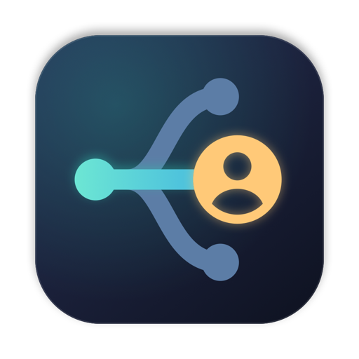
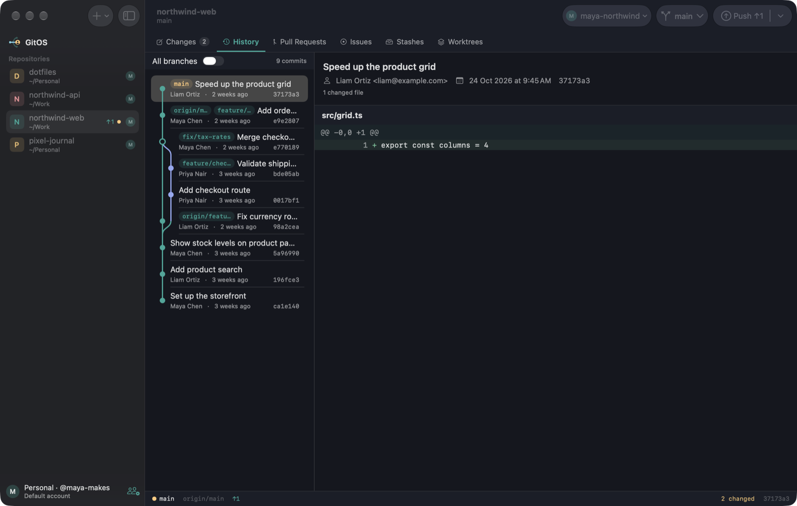

Stage exactly what you mean
Stage whole files, single hunks, or individual lines. Click the line numbers, and Shift-click for a range.

GitOS DownloadFree and open source for macOS
GitOS is a native Mac git client that switches GitHub accounts for you, by folder or by repository. No more work commits from your personal email.
Requires macOS 27 on Apple Silicon, and git.

Built around multiple accounts
Tell GitOS which folders belong to which account. Every fetch, commit and push then uses the right sign-in and the right commit identity.
~/.gitconfig and existing logins are never changed~/WorkMmaya-northwind~/PersonalMmaya-makeseverything elseMdefault accountEverything you do in git

Stage whole files, single hunks, or individual lines. Click the line numbers, and Shift-click for a range.
A commit graph across one branch or all of them, with a searchable branch picker that includes remote branches.
Reorder, reword, squash and drop commits visually. GitOS warns you before rewriting anything already pushed.
A 3-way editor with ours, base and theirs side by side, plus an editable result.
Review open PRs and checks, check out a PR, open a new one, and manage issues without leaving the app.
Work on several branches at once, and stash or restore changes in a click.
AI, on your terms
Press ⌘⇧G and GitOS writes a message from your staged changes, matching your repository's style. It works with your signed-in Claude Code or Codex, with no API key needed, or with an Anthropic API key.
Updates
GitOS downloads new versions in the background, then asks. Nothing installs until you click Restart to Update.
Make it yours
Pick one, and this site changes with it. These are the same colors the app uses.
Getting started
GitOS isn't notarized by Apple yet, so macOS asks you to approve it the first time.
Download for Mac.dmg and drag GitOS to Applications.Read the code, report a bug, or send a pull request. Everyone's welcome.